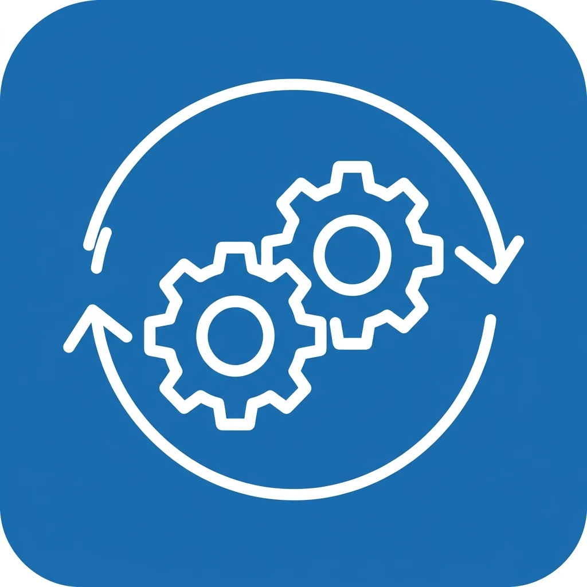
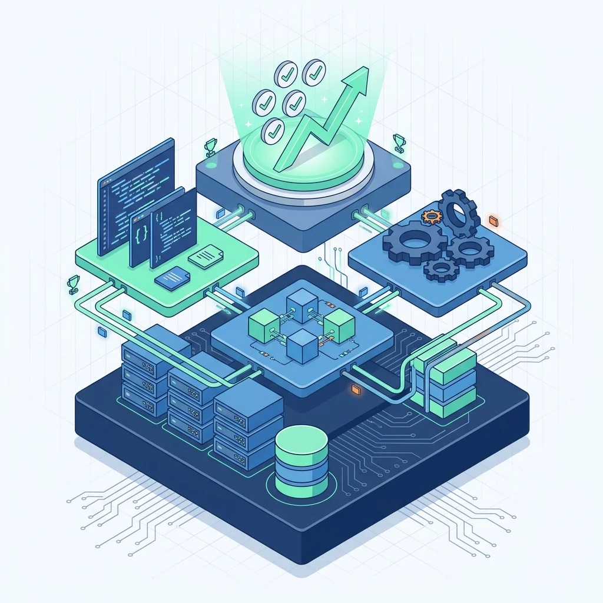
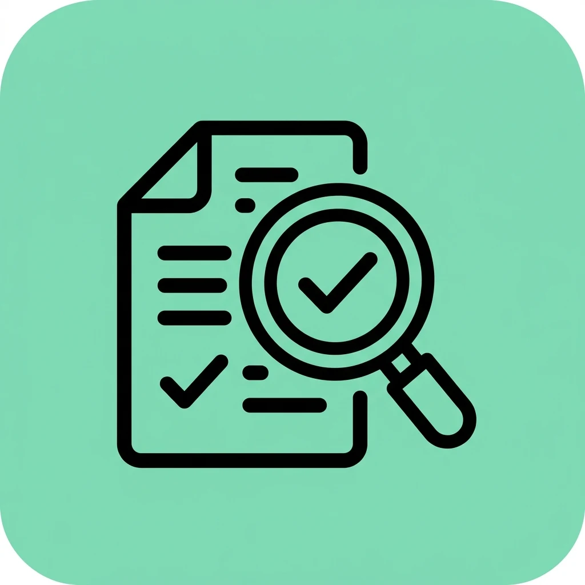
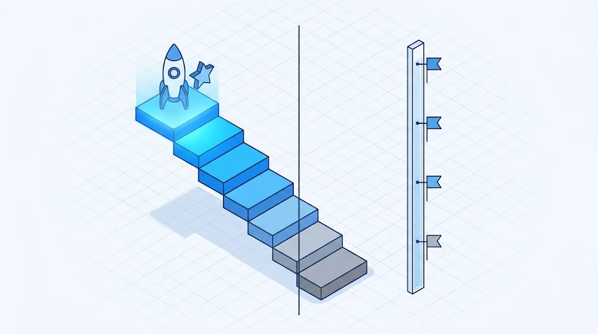

Proceso
Conjunto de actividades relacionadas que transforma entradas en resultados. Ejemplo: revisar una solicitud, desarrollarla, probarla y aprobarla.
Modelo de madurez y capacidad para la mejora de procesos de software. De la teoría a la práctica en el aseguramiento de la calidad.
Empezar

Conjunto de actividades relacionadas que transforma entradas en resultados. Ejemplo: revisar una solicitud, desarrollarla, probarla y aprobarla.

Información verificable que demuestra qué se hizo y qué resultado se obtuvo: registros, resultados de pruebas, actas o repositorios.
Dato cuantitativo o cualitativo usado para conocer el desempeño y apoyar decisiones.
CMMI significa Capability Maturity Model Integration. Es un conjunto de buenas prácticas que ayuda a las organizaciones a mejorar la manera en que planifican, desarrollan, entregan y mantienen productos y servicios.
No es un lenguaje de programación, una metodología ni una herramienta para escribir código: es un modelo de mejora de procesos.
Idea clave: CMMI no garantiza que un software nunca tendrá errores. Ayuda a prevenirlos, detectarlos, analizarlos y reducir su recurrencia.
Los equipos enfrentan requisitos incompletos, cambios no controlados, errores tardíos y retrabajo costoso. CMMI aporta una estructura para reconocer estas debilidades y mejorar.
0-1
2-3
4-5

No confundir: los niveles de madurez describen a toda la organización y llegan hasta el 5; los niveles de capacidad se aplican a una práctica específica y llegan hasta el 3.
CMMI no impone cascada ni Scrum: busca que las actividades se realicen de forma controlada y con resultados verificables.
Trazabilidad: requisito R-05, módulo de préstamos, caso de prueba CP-05 y resultado aprobado.
La calidad no se logra solo probando al final: se construye durante todo el proceso.
Pruebas unitarias, de integración, de sistema, de aceptación y de regresión. Decir "ya lo revisé y funciona" no es evidencia.
Cada área de trabajo aporta una práctica concreta al día a día del equipo de software.
CMMI no debe convertirse en burocracia: la documentación debe aportar valor, reducir riesgo o mejorar la calidad.
Una institución educativa necesita registrar préstamos y devoluciones de portátiles, consultar disponibilidad y reportar equipos dañados. Antes, los préstamos estaban en hojas de cálculo distintas y los errores aparecían al final.
Con prácticas inspiradas en CMMI, el equipo aclara requisitos, planifica, diseña, programa con Git, prueba, libera con control y analiza los defectos que se repiten.
Criterio de aceptación: si el equipo ya está prestado, el sistema debe impedir un segundo préstamo.
Las métricas permiten entender el desempeño y comprobar si una mejora funciona. Ningún indicador aislado representa toda la calidad de un software.
Ejemplo: 80 pruebas ejecutadas y 72 aprobadas dan una tasa de aprobación de 90 %. Las métricas no se usan para culpar personas.
Cliente, líder de proyecto, analista, diseñador, desarrollador, responsable de pruebas, responsable de configuración y dirección tienen cada uno una responsabilidad sobre la calidad.
En equipos pequeños una persona puede cumplir varios roles; lo importante es que las responsabilidades estén claras y que las revisiones críticas sean objetivas.
Una evaluación interna orienta la mejora, pero no equivale a una evaluación oficial.
No hay que elegir: Scrum define historias, DevOps automatiza pruebas y CMMI aporta el marco para medir y mejorar.
CMMI ofrece buenas prácticas para mejorar cómo se desarrolla y entrega software.
La calidad debe trabajarse durante todo el ciclo de vida, no solo al final.
Los niveles de madurez y de capacidad están relacionados, pero son distintos.
Las métricas deben ayudar a decidir y mejorar, no ser números sin contexto.